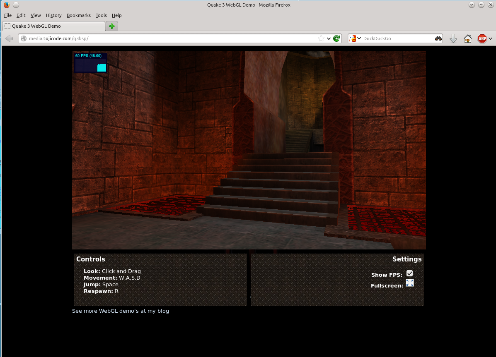

Selain ohjelmointialustana
Juha Nurmi, etunimi.sukunimi@ahmia.fi
Julkinen PGP-avain
WWWW ja sen teknologiat suunniteltu alunperin dokumenttien selailuun

Modernit selaimet ovat ohjelmointialustoja
Modernit selaimet ovat ohjelmointialustoja
Tarjoaa samanlaisia sovellusrajapintoja kuin käyttöjärjestelmä
- JavaScript
- HTML5
- Canvas
- WebGL
- WebSocket
- WebRTC
JavaScript
JavaScript on selaimessa suoritettava ohjelmointikieli
- Scriptimäinen
- Nykyään suorituskykyinen
- Suuri määrä kirjastoja
JavaScript
Syitä opetella JavaScript:
- HTML määrittelee sivujen sisällön
- CSS määrittelee ulkoasun
- JavaScript lisää dynaamisen käyttäytymisen
JavaScript:n piirteitä
- Muuttujien esittely tapahtuu var-avainsanalla
- Muuttujiin voi sijoittaa lukuarvoja, merkkijonoja tai new-avainsanaa käyttämällä objekteja
var name = "Matti";
var age = 40;
var shoe = new Shoe();
JavaScript:n piirteitä
- Objektit koostuvat ominaisuuksista, joita voi lisätä myös lennossa
- Myös ominaisuudet voivat olla objekteja, joilla on ominaisuuksia
shoe.type = 'walking';
shoe.brand = 'Nike';
shoe.bought = new Date(2009,10,1);
JavaScript:n piirteitä
// kommentit kahdella kauttaviivalla
// funktio määritellään avainsanalla function
// function nimi( par1, par2, ... , parN ){ ... }
function() showAlert( teksti ){
alert( teksti );
};
JavaScript:n piirteitä
- Myös funktiot ovat objekteja
- Ne liitetään objekteihin niiden ominaisuuksina
shoe.manufacture = function() {
alert('Making a shoe!');
};
JavaScript-koodin liittäminen HTML-dokumenttiin
<!-- JavaScript-koodi voidaan upottaa suoraan script-elementin sisään -->
<script type="text/javascript"> ... </script>
<!-- Tai se voidaan ladata erillisestä tiedostosta -->
<!-- Tällöin viittaus tiedostoon tehdään href-attribuutin avulla -->
<script type="text/javascript" src="koodi.js"></script>
JavaScript-esimerkkejä
Tästä on hyvä lähteä opettelemaan

JavaScript-esimerkkejä
- jQuery on yleiskäyttöinen kirjasto, joka helpottaa JavaScript-ohjelmointia
- vapaa ohjelmistokirjasto
- syntaksi helppolukuista
- käytetään lähes kaikkialla JavaScriptin kanssa
- W3Schools:n jQuery-tutoriaali
Selainpään koodailun testailuun
- jsFiddle.net - kätevä online-palvelu HTML+CSS+JavaScript-sovellusten testailuun suoraan selaimessa
- Vastaava on tälläkin kurssilla usein käytetty jsbin.com
Selaimen työkalut
- Google chromessa / Chromiumissa kehitystyökalut löytyvät valikon kohdasta Tools->JavaScript console tai painamalla ctrl+shift+j
- Firefoxissa taas ne löytyvät Tools->Web developer->Web console tai painamalla ctrl+shift+k
- Eräs kehitystyökaluista on JavaScript-komentorivi, jolla voi suorittaa omaa JavaScript-koodia verkkosivulla
- Muilla työkaluilla voi mm. tarkastella ajonaikaista DOM-puuta sekä verkkoliikennettä
Selaimen työkalut
- Hassu demo
- hs.fi:n maksumuurin kiertäminen
window.location = msnAwareShortUrl;
JSON
- JSON: JavaScript Object Notation
- Yleinen tietorakenne web-sovelluksissa
- Python- ja JavaScript-kielen kanssa yleinen ja helppokäyttöinen
- Muistuttaa XML-kieltä, mutta yksinkertaisempi syntaksi
- Tekstipohjainen, mutta nopeampi käsitellä kuin XML
JSON
- JSON on helppolukuista ja itseään kuvailevaa
- Sisäänrakennettu JavaScript-kieleen
- Nimi-arvo-parit
{ "etunimi":"Juha" , "sukunimi":"Nurmi" }
JSON
- Data erotellaan pilkuilla
- {} sisälle objektit
- [] sisälle taulukot
JSON
Arvot voivat olla:
- numeroita
- merkkijonoja
- Boolean (true/false)
- Taulukoita
- Objekteja
- null
JSON
{
"employees": [
{ "firstName":"John" , "lastName":"Doe" },
{ "firstName":"Anna" , "lastName":"Smith" },
{ "firstName":"Peter" , "lastName":"Jones" }
]
}
JSON
HTML5
- HTML-kielen viimeisin versio
- Paljon ohjelmointia helpottavia piirteitä
- Canvas, WebGL, WebStorage, uudet lomakkeet...
HTML5 Web Storage
- Selaimen cookie on kömpelö tapa säilöä tietoja selaimessa
- Web Storage tekee tietojan tallentamisesta ja hakemisesta helppoa
- JavaScriptilla ohjelmoitavissa
- Objektin kokoraja 10-15 megatavua
- Yksinkertainen avain-arvo-pari-tietomalli
HTML5 Web Storage
// Store value on browser for duration of the session
sessionStorage.setItem('key', 'value');
// Retrieve value (gets deleted when browser is closed and re-opened)
alert(sessionStorage.getItem('key'));
HTML5 Web Storage
// Store value on the browser beyond the duration of the session
localStorage.setItem('key', 'value');
// Retrieve value (persists even after closing and re-opening the browser)
alert(localStorage.getItem('key'));
Canvas
- HTML5 <canvas>-elementtiä käytetään dynaamisen grafiikan piirtämiseen JavaScriptin avulla
- <canvas>-elementti on vain säiliö grafiikalle ja varsinainen sisältö pitää tuottaa JavaScriptin avulla
- Canvas tarjoaa useita piirtometodeja, kuten viivat, laatikot, ympyrät sekä teksti ja kuvien lisäämisen
Canvas-demo
Canvas
Canvas
WebGL
- WebGL (Web Graphics Library) on selaimen natiivi JavaScript API 2D- ja 3D-grafiikan piirtoon
- Rautakiihdytetty eli GPU hoitaa grafiikan suorittamisen
- WebGL on matalan tason kieli
- Kirjastojen avulla käyttäminen muuttuu yksinkertaiseksi
WebGL
- Ensimmäiset alpha-versiot selaimiin vuonna 2010
- Toimii nykyään kaikissa selaimissa
- WebGL kieli OpenGL-kielen kaltaista
- Näytönohjaimen ajurien oltava kunnossa
- Piirto tapahtuu canvas-elementtiin
X3DOM
- X3DOM-tekee 3D-grafiikaohjelmoinnista helppoa
- Näyttää XML-pohjaista X3D-formaattia osana HTML-dokumenttia
- X3DOM-esimerkki
- X3D osana DOM-rajapintaa mahdollistaa 3D:n muokkaamisen JavaScript:n avulla
- Jos WebGL-tuki puuttuu, niin X3DOM-kirjasto siirtää piirron Flashille
- DOM:n kautta dynaamisia muutoksia
WebSocket
- Selaimen ja palvelimen välinen tiedonsiirtoprotokolla
- Ratkaisu nopeaan tiedonsiirtoon HTTP:n tilalle
- WebSocket on full-duplex yhden TCP-yhteyden päällä
- JavaScript hoitaa selainpäässä yhteyden
WebRTC
- Selaimen ja selaimen välinen tiedonsiirtoprotokolla
- Mahdollistaa P2P-ratkaisut
- Yhteyden muodostaminen broker-palvelimen
- JavaScript API
- PeerJS-kirjastolla ohjelmointi yksinkertaista
- Pikaviestimen toteutus selaimesta selaimeen
WebCL
Tulevia mahdollisuuksia
- WebCL on JavaScrip:n laajennus OpenCL-kielen suorittamiseksi
- Mahdollistaa GPU:lla ajettavan laskentakoodin suorittamisen selaimessa
- Tehokas rinnakkaisten laskentaongelmien ratkomiseksi
Showcase selainpohjaisuudesta
Selainpohjainen virtuaalikonelaboratorio
- Simulaation arvot suorituskykyisellä WebSocket-yhteydellä selaimeen
- 3D-grafiikka WebGL:n avulla
- Piirturit HTML5:n canvas-piirtopinnalle
- JavaScript säikeistetty useille ytimille
Lopuksi
- Dokumenttien WWW:stä on tullut sovellusten web
- Selain on ohjelmointialusta
- Yhä usemmat sovellukset selaimessa toimiviksi
- Palvelut pilveen
- Selain tarjoaa lopulta samat palvelut kuin käyttöjärjestelmä